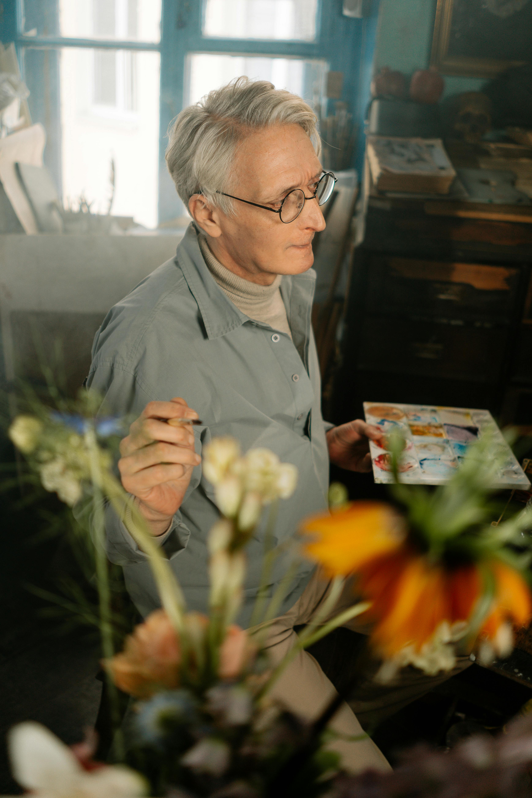
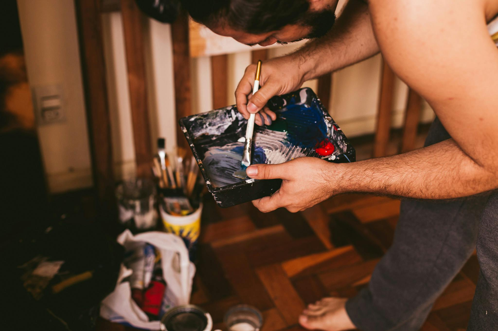
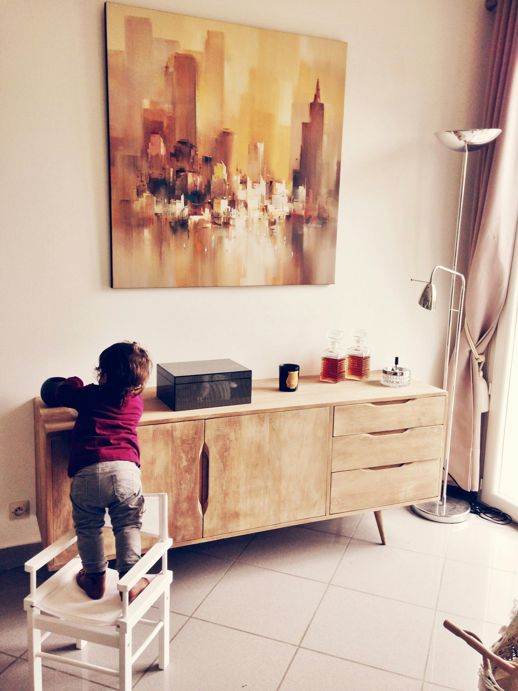

Founded by artist, MMY King, Tech Palette Mentor is an app created at the intersection of art processes and technology. We are passionate about bridging the gap between traditional art practices and modern technology. Just as the Old Masters learned from their predecessors, how can we apply this practice in 2024?
This question led to the coding in HTML, CSS, JAVA, SQL, noSQL, and hosting of frontend/backend files to bring light to the answer.
This is an innovative web app designed specifically for artists of all levels.

With Tech Palette Mentor, the aim is to empower creators by providing personalized color blending suggestions based on their actual paint inventory.
You're only using the Zorn palette? Cool - select those 4 colors in the palette area, upload the picture you want to paint, and click on the image to be told what color to mix and at what percentage to recreate that image. Drawing is a factor too; draw a grid on your canvas and click on our grid for your image, and boom - copy that picture, block it out, and get blending.
Less thinking, less logic; our code does that for you, and more play, more experimentation!

Tech Palette Mentor, created by artist MMY King, MMY King merges traditional art with modern technology.
The app empowers artists by offering personalized color blending suggestions based on their paint inventory. Simply upload an image, select your colors, and Tech Palette Mentor tells you how to mix them to recreate it.
With tools like a grid for easy blocking and blending, the app promotes creativity and experimentation, helping artists explore the endless possibilities of color theory.

The mission here is to inspire creativity, enhance artistic expression, and help artists explore the endless possibilities of color theory.
Tech Palette Mentor is on this exciting journey to elevate your artistry!
How to Use
Upload your images.
Use the grid to draw the image on your own canvas.